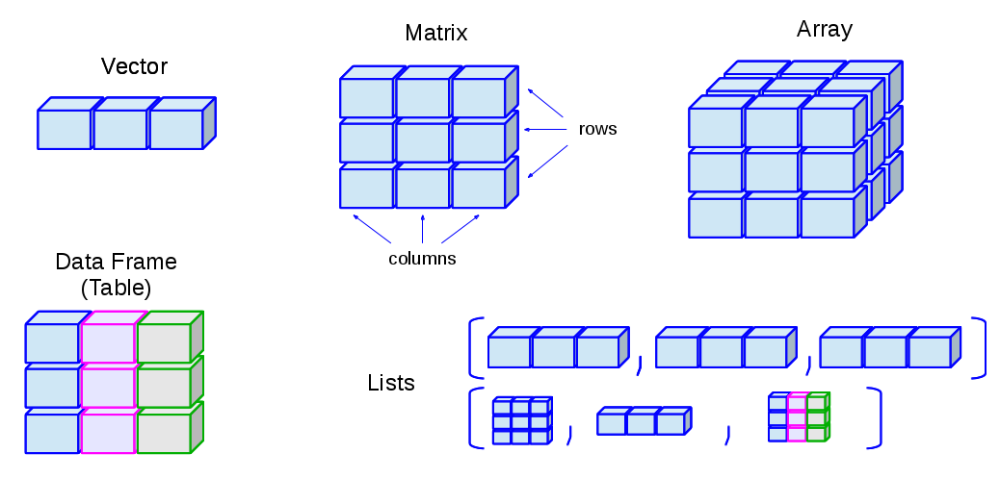
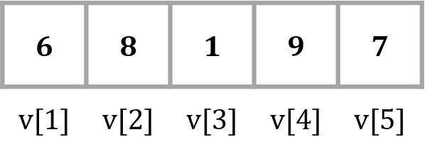
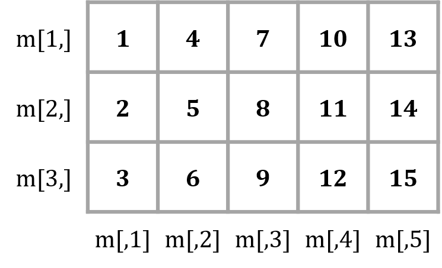

Chapter 3 데이터와 자료구조
3.1 데이터 이해
3.1.1 형태에 따른 분류
| 구분 | 내용 |
|---|---|
| 정형 데이터 | - 일정한 규칙을 가지고 체계적으로 정리된 데이터로, 그 자체로 의미 해석이 가능 - 내부 시스템에 의한 데이터로 수집하기 쉽고, 형식을 가지고 있어 처리하기 쉬움 |
| 반정형 데이터 | - XML, HTML 등의 형태로 존재하는 데이터로, 메타데이터나 구조정보 등을 포함 - API 형태로 제공되므로 데이터 처리 기술이 필요 |
| 비정형 데이터 | - 텍스트 문서, 이미지, 동영상 등과 같이 구조화되지 않은 형태의 데이터 |
3.2 자료구조(data structure)
- 문제해결을 위해 프로그램이 효율적으로 접근, 변경, 연산이 가능하도록 만든 값들의 구조화된 집합
- 메모리에 실제 생성된 자료구조를 객체(object)라고 함
- R은 벡터(vector), 행렬(matrix), 배열(array), 리스트(list), 데이터프레임(data frame)의 5개 기본 자료구조를 제공함
| 구분 | 1차원 | 2차원 | n차원 |
|---|---|---|---|
| 동질적 | 벡터 | 행렬 | 배열 |
| 이질적 | 리스트 | 데이터프레임 | - |

3.3 벡터(vector)
- 동일한 자료형의 값을 1차원으로 저장하는 가장 기본적인 자료구조
3.3.1 벡터 생성
c()함수를 이용하여 벡터를 생성- 숫자와 문자를 함께 벡터에 저장하면, 숫자는 모두 문자로 바뀜
v1 <- c(1, 2, 3, 4, 5) # 숫자형 벡터
v2 <- c("a,", "b", "c") # 문자형 벡터
v3 <- c(TRUE, FALSE, FALSE) # 논리형 벡터
v4 <- c(1, 2, 3, "a", "b,", "c") # 문자형 벡터- 연속적인 숫자로 이루어진 벡터 생성 -
: - 일정한 간격의 숫자로 이루어진 벡터 생성 -
seq(from=시작값, to=종료값, by=간격)함수 - 반복된 숫자로 이루어진 벡터 생성 -
rep(x=반복대상값, times=반복횟수)함수
v5 <- 1:10 # 1~10 값 생성
v6 <- seq(1, 10, 2) # 1~10 사이의 홀수만 생성
v7 <- rep(1:5, times = 3) # 1~5 값을 3번 반복한 값 생성
v8 <- rep(1:5, each = 3) # 1~5 값을 각각 3번 반복한 값 생성3.3.2 벡터 인덱싱
- 인덱스(index): 벡터에 저장된 각각의 값들을 구별하기 위하여 앞쪽의 값부터 시작하여 부여한 순서값
- 인덱싱(indexing): 인덱스를 이용하여 벡터의 특정 위치에 저장된 값들을 하나 또는 여러 개 추출하는 작업
- 추출하려는 값의 인덱스를 벡터 형태로 인덱싱 연산자
[]안에 작성 - 인덱스 앞에
-를 붙이면 해당 인덱스를 제외한 나머지 값을 추출함 - 논리형 벡터를 입력하면 TRUE에 해당하는 인덱스만 추출함
- 추출하려는 값의 인덱스를 벡터 형태로 인덱싱 연산자
v <- c(6, 8, 1, 9, 7)
v[1] # 6
v[6] # NA
v[1:3] # 6, 8, 1
v[-5] # 5번째 인덱스만 제외한 나머지 값 추출
v[c(TRUE, TRUE, FALSE, TRUE, FALSE)] # TRUE에 해당하는 인덱스 값 추출
3.3.3 벡터 산술연산
- 단일 값과 벡터의 산술연산은 벡터의 모든 원소에 동일한 연산이 적용됨
- 벡터 간 산술연산은 대응되는 위치에 있는 원소들끼리 연산이 이루어짐
v9 <- c(3, 7, 6)
v10 <- c(4, 2, 8)
v9 + 2 # 5, 9, 8 - 벡터화(vectorization)
v9 - v10 # -1, 5, -2
v9 * c(10, 5) # 경고: 30, 35, 60 - 재활용 규칙(recycling rule) 적용- 벡터에 적용 가능한 함수
| 함수 | 설명 |
|---|---|
| sum() | 벡터에 포함된 값들의 합 |
| mean() | 벡터에 포함된 값들의 평균 |
| median() | 벡터에 포함된 값들의 중앙값 |
| max() | 벡터에 포함된 값들의 최대값 |
| min() | 벡터에 포함된 값들의 최소값 |
| var() | 벡터에 포함된 값들의 분산 |
| sd() | 벡터에 포함된 값들의 표준편차 |
| length() | 벡터에 포함된 값들의 개수(길이) |
3.3.4 벡터 비교연산
- 비교연산자를 벡터에 적용하면 조건에 맞는 값들을 추출할 수 있음
- 비교연산도 벡터에 포함된 각각의 값에 대한 연산으로 바뀌어 실행됨
- 논리값이 산술연산에 사용되면 FALSE는 0으로, TRUE는 1로 간주됨
v11 <- 1:10
v11 >= 5 # 각 원소가 5 이상이면 TRUE, 아니면 FALSE
v11[v11 >= 5] # 5 이상인 값 추출
sum(v11 < 5) # 5 미만인 값의 개수
sum(v11[v11 < 5]) # 5 미만인 값의 합계3.3.5 팩터(factor)
- 문자형 데이터를 저장하는 벡터의 한 종류
- 성별, 혈액형 등과 같이 저장할 데이터 값이 정해져 있을 때 사용함
- 문자형 벡터를 만든 뒤
factor()함수를 이용하여 생성 levels()함수는 팩터가 가질 수 있는 값(범주)을 알려줌- 팩터는 정의된 값(levels) 외에 다른 값은 저장할 수 없기 때문에 오타를 방지할 수 있음
szn <- c("spring", "fall", "winter", "summer", "summer", "spring")
szn_fct <- factor(szn)
levels(szn_fct)
szn_fct[7] <- "autumn"
# 팩터의 levels 순서 지정
szn_fct2 <- factor(szn, levels = c("spring", "summer", "fall", "winter"))
levels(szn_fct2)3.4 행렬(matrix)과 배열(array)
- 행렬: 동일한 자료형의 값을 2차원으로 저장하는 자료구조
- 배열: 동일한 자료형의 값을 n차원으로 저장하는 자료구조
3.4.1 행렬 생성
matrix()함수를 이용하여 행렬을 생성- 매개변수
nrow,ncol- 행렬의 행과 열의 개수를 지정 - 매개변수
byrow- TRUE인 경우 행렬에 저장될 값들을 행 방향으로 채움, 기본값(default)은 FALSE
- 매개변수
## [,1] [,2] [,3] [,4] [,5]
## [1,] 1 5 9 13 17
## [2,] 2 6 10 14 18
## [3,] 3 7 11 15 19
## [4,] 4 8 12 16 20dim()함수 - 행렬의 차원을 반환nrow(),ncol()함수 - 행렬의 행과 열의 개수를 각각 반환rownames(),colnames()함수 - 행렬의 행과 열의 이름을 각각 반환- 데이터를 이해하는데 도움이 됨
score <- matrix(c(80, 67, 74,
82, 95, 88,
75, 84, 82,
95, 83, 76),
nrow = 4, ncol = 3, byrow = TRUE)
dim(score) # 행렬의 차원 4x3
nrow(score) # 행의 개수 4
ncol(score) # 열의 개수 3
rownames(score) # 행 이름 NULL
colnames(score) # 열 이름 NULL
rownames(score) <- c("Kim", "Lee", "Park", "Choi")
colnames(score) <- c("Kor", "Eng", "Math")
score3.4.2 행렬 인덱싱
- 행과 열의 위치에 대한 2개의 인덱스로 특정 위치의 값을 추출함
- 인덱스가 생략된 차원은 전체 행 또는 열을 반환
- 비교연산자를 행렬에 적용하면 행렬의 각 원소에 대한 연산으로 바뀌어 실행됨
m <- matrix(1:15, nrow = 3, ncol = 5)
m[2, 4] # 2행 4열에 위치한 값 추출
m[3, ] # 3행에 있는 모든 값 추출
m[, 1] # 1열에 있는 모든 값 추출
m[, 1:3] # 1~3열에 있는 모든 값 추출
m[-2, ] # 2행만 제외한 나머지 모든 값 추출
m > 7 # 각 원소가 7 초과면 TRUE, 아니면 FALSE
m[m > 7] # 7 초과인 값 추출(벡터)
3.4.3 행렬 산술연산
- 단일 값과 행렬의 산술연산은 행렬의 모든 원소에 동일한 연산이 적용됨
- 행렬 간 산술연산은 대응되는 위치에 있는 원소들끼리 연산이 이루어짐
- 두 행렬의 크기(행과 열의 개수)가 같아야 함
m2 <- matrix(1:20, nrow = 4) # 4x5 행렬
m3 <- matrix(21:40, nrow = 4) # 4x5 행렬
2 + m2
3 * m2
m2 + m3
m2 - m3
m2 * m3
m2 / m33.4.5 특수행렬
| 특수행렬 | 설명 |
|---|---|
| 단위행렬(identity matrix) | 대각원소가 모두 1이고, 나머지 원소는 0인 행렬 |
| 영행렬(zero matrix) | 모든 원소가 0인 행렬 |
| 대각행렬(diagonal matrix) | 대각원소 외에는 모두 0인 행렬 |
| 대칭행렬(symmetric matrix) | 대각원소를 기준으로 대칭인 행렬 |
| 전치행렬(transpose matrix) | 행과 열을 서로 바꾼 행렬 |
| 역행렬(inverse matrix) | (행렬식이 0이 아닌 경우에만 존재) |
I <- diag(1, nrow = 3, ncol = 3) # 단위행렬
Z <- matrix(0, nrow = 3, ncol = 3) # 영행렬
D <- diag(c(1, 2, 3)) # 대각행렬
S <- matrix(c(1, 2, 2, 1), nrow = 2) # 대칭행렬
A <- matrix(1:6, nrow = 2, ncol = 3)
A_trans <- t(A) # 전치행렬
B <- matrix(c(1, 2, 3, 4), nrow = 2)
B_inv <- solve(B) # 역행렬
B %*% B_inv3.5 리스트(list)
- 서로 다른 자료형의 값을 1차원으로 저장하는 자료구조
- R의 모든 객체가 리스트의 원소가 될 수 있어 매우 유연함(flexible)
- 함수의 결과값을 리스트의 형태로 반환하면 다양한 데이터를 효율적으로 저장하고 활용할 수 있음
3.6 데이터프레임(data frame)
- 서로 다른 자료형의 값을 column 단위로 2차원으로 저장하는 자료구조
- 데이터프레임에서 특정 열을 가져오면 값들의 자료형이 모두 동일해야 함
- 같은 길이의 벡터를 원소로 가지는 리스트의 특별한 경우임
- 행렬과 데이터프레임은 모두 2차원 형태의 데이터를 저장하는 자료구조이므로, 다루는 방법이 대부분 동일함
3.6.1 데이터프레임 생성
data.frame()함수를 이용하여 데이터프레임을 생성- 일반적으로 여러 개의 벡터를 결합하여 생성함
df1 <- data.frame(name = c("Kim", "Lee", "Park", "Choi"),
age = c(24, 25, 22, 27),
btype = factor(c("A", "B", "O", "B"), levels = c("A", "B", "O", "AB")),
smoking = c(TRUE, FALSE, TRUE, TRUE))
df1## name age btype smoking
## 1 Kim 24 A TRUE
## 2 Lee 25 B FALSE
## 3 Park 22 O TRUE
## 4 Choi 27 B TRUE- 데이터프레임은 행렬과 동일한 방법으로, 행과 열의 이름을 지정할 수 있음
3.6.2 데이터프레임 인덱싱
- 행렬과 동일한 방법으로, 행과 열의 위치에 대한 2개의 인덱스로 특정 위치의 값을 추출함
- 인덱스 대신 행 또는 열의 이름을 사용할 수 있음
- 리스트의 특별한 경우이므로,
(데이터프레임 이름)$(열 이름)을 이용할 수 있음
df2[1, 2] # 1행 2열에 위치한 값 24
df2[, 3] # 3열(btype)에 있는 모든 값
df2[, "name"] # 인덱스에 열 이름을 사용
df2$smoking # 열 이름이 smoking인 벡터3.6.3 데이터프레임 요약 함수
| 함수 | 설명 |
|---|---|
| head() | 처음 몇 개의 원소를 반환 |
| tail() | 마지막 몇 개의 원소를 반환 |
| str() | 자료구조와 각 원소의 자료형, 미리보기 출력 |
| unique() | 중복된 값을 제거하고 유일한 값만 반환 |
| table() | 각 값의 빈도를 계산하여 표 형태로 반환 |
| colSums(), colMeans() | 각 열에 대한 합계/평균을 계산 |
| rowSums(), rowMeans() | 각 행에 대한 합계/평균을 계산 |
dim(iris) # 데이터프레임의 차원
nrow(iris) # 행의 개수
ncol(iris) # 열의 개수
colnames(iris) # 열 이름, names()와 결과 동일
head(iris) # 처음 6개 행 출력
tail(iris) # 마지막 6개 행 출력
str(iris) # 데이터셋 요약 정보
unique(iris[, 5]) # 품종의 종류 보기(중복 제거)
table(iris[, "Species"]) # 품종의 종류별 행의 개수 세기
colSums(iris[, -5]) # 각 열의 합계
colMeans(iris[, -5]) # 각 열의 평균
rowSums(iris[, -5]) # 각 행의 합계
rowMeans(iris[, -5]) # 각 행의 평균